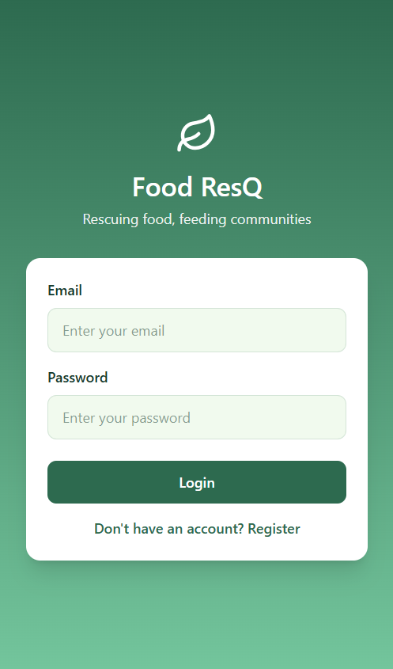
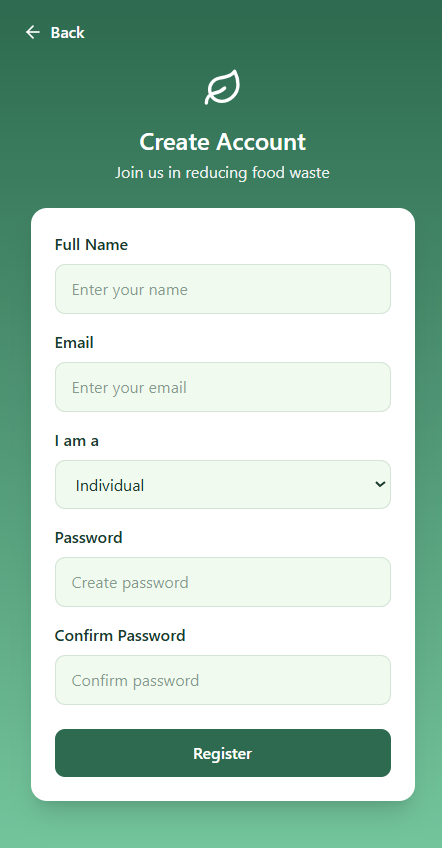
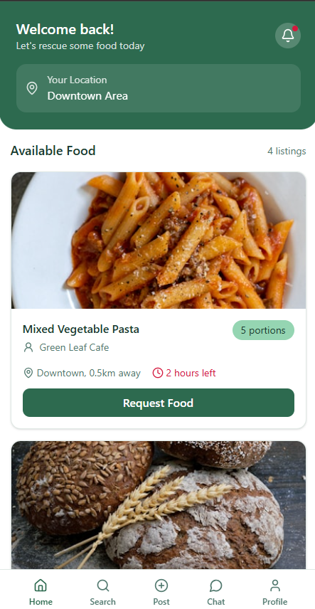
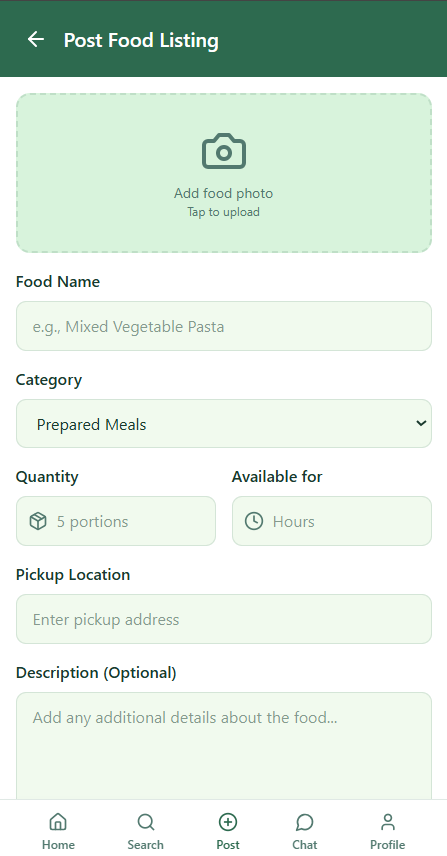
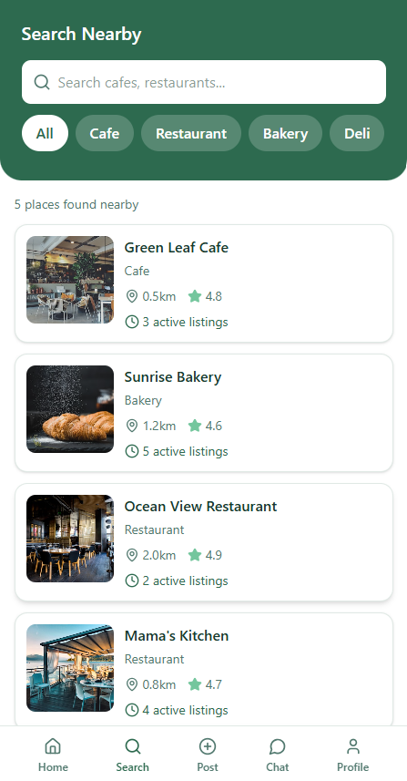
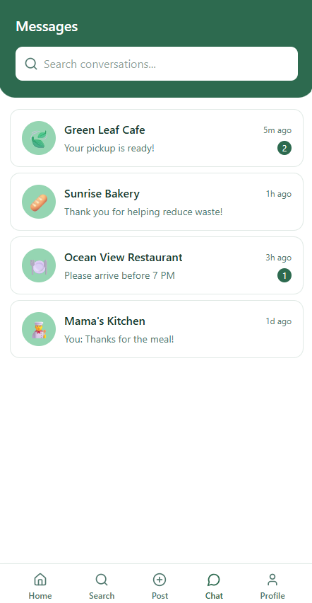
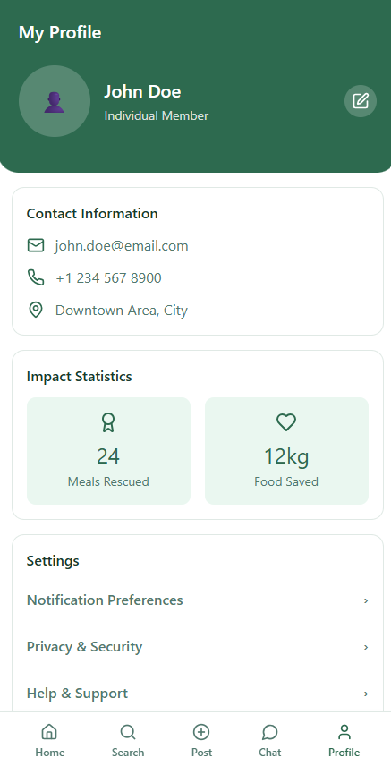

About the Project
Food ResQ is a food rescue application designed to reduce food waste by connecting shops, stalls, and restaurants with less fortunate communities through food redistribution. Large amounts of edible food are wasted daily while many individuals and families still struggle to access proper meals and food resources. Food ResQ creates a platform where businesses can list unfinished or unwanted food, allowing nearby organizations, volunteers, or individuals to request and redistribute the food to those in need.
Features
- Food Donation Listings
- Location-Based Pickup Requests
- Restaurant & Stall Registration
- Donation Tracking System
- User-Friendly Mobile Interface
Technologies Used
UI/UX Mobile Design Firebase Figma Community AppProject Preview







My Role
Responsible for application concept development, UI/UX design, food redistribution workflow planning, and creating a socially impactful user experience.
Lessons Learned
Through this project, I improved my understanding of designing applications with social impact, creating user-centered workflows, and developing systems focused on solving real community issues.